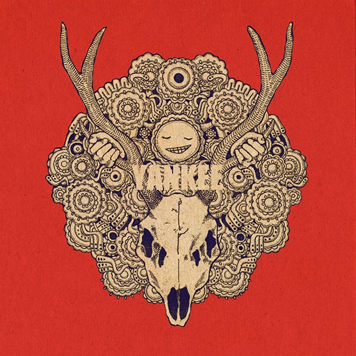
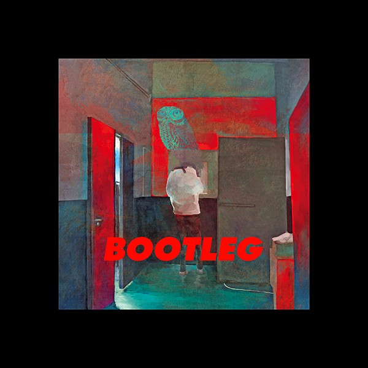

｢diorama」 2月より作詞・作曲・ボーカルまでを自ら務めた「ゴーゴー幽霊船」「vivi」「恋と病熱」のミュージックビデオを3か月連続で、YouTube、ニコニコ動画にて発表したのち、5月16日にBALLOOMよりアルバム『diorama』を発売。
--収録曲--
1.「街」 2.「ゴーゴー幽霊船」 3.「駄菓子屋商売」 4.「caribou」 5.「あめふり婦人」 6.「ディスコバルーン」 7.「vivi」 8.「トイパトリオット」 9.「恋と病熱」 10.「Black Sheep」 11.「乾涸びたバスひとつ」 12.「首なし閑古鳥」 13.「心像放映」 14.「抄本」
｢YANKEE」 『diorama』以来およそ2年ぶりにしてメジャーデビュー後初となるオリジナルアルバム『YANKEE』を発表。
--収録曲--
1.リビングデッド・ユース 2.MAD HEAD LOVE 3.WOODEN DOLL 4.アイネクライネ 5.メランコリーキッチン 6.サンタマリア 7.花に嵐 8.海と山椒魚 9.しとど晴天大迷惑 10.眼福 11.ホラ吹き猫野郎 12.TOXIC BOY 13.百鬼夜行 14.KARMA CITY 15.ドーナツホール(COVER)
｢Bremen｣ 2015年 3枚目となるアルバム『Bremen』を発表。
--収録曲--
1.アンビリーバーズ 2.フローライト 3.再上映 4.Flowerwall 5.あたしはゆうれい 6.ウイルオウィスプ 7.Undercover 8.Neon sign 9.メトロノーム 10.雨の街路に夜光蟲 11.シンデレラグレイ 12.ミラージュソング 13.ホープランド 14.Blue Jasmine
｢BOOTLEG｣ 2017年 11月1日、『Bremen』からおよそ2年1か月ぶりのアルバム『BOOTLEG』を発表。
--収録曲--
1.飛燕 2.LOSER 3.ピースサイン 4.砂の惑星（＋初音ミク）5.orion6.かいじゅうのマーチ 7.Moolight8.春雷 9.fogbound(+池田エライザ) 10.ナンバーナイン 11.爱丽丝 12.Nighthawks 13.打上花火 14.灰色と青 (+菅田将暉)